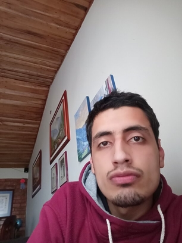

Diseñado por:
Nombre: John Steven Uyaban Martinez
Código: 1075875497
Grupo: 10
Programa: Ingeniería de Sistemas
Curso: Diseño de Sitios Web - 301122
Correo: jsuyabanm@unadvirtual.edu.co
Skype: live:hbk-john
